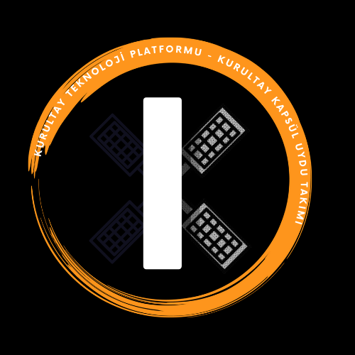

-
Talha Nebi Kumru
-
Selçuklu, Konya, Türkiye
Hakkında
Konya Gıda ve Tarım Üniversitesi'nde bilgisayar mühendisliği öğrencisiyim. Aynı zamanda bankada müşteri temsilcisi olarak çalıştım. Müşteri temsilciği bana insanlarla nasıl iyi iletişim kuracağımızı gösterdi. Müşteri temsilciği sabırlı ve anlayışlı olmayı
ciddi oran öğretti ve geliştirdi. Kendi eğitimim ve kendi gerçek işim için veri tabanı yönetim sistemleri, yapay zeka, algoritma tasarımı/analizi, programlama dili tasarımı vb. ile ilgileniyorum. En büyük hedefim kendimi geliştirmek. Bu nedenle
ulaşabildiğimce temel konulara, yarışmalara ve kurslara ulaşabilmek ve orta seviyede olabilecek şekilde çalıştım. Yarışma hususunda Teknofest Havacılık ve Teknoloji Festivali'ni takip ediyorum. Bu yarışmalarda 2021 yılında model uydu yarışmasındaydık.
Bizleri elektronik haberleşme sistemleri ile tanıştırdı. Model Uydu Yarışması bize lora haberleşme modülü, verici/alıcı (FPV), mikroişlemciler ve bunların kodlaması, sensör modül çeşitleri, mekanik tasarım ve tasarım programları (Solidworks),
3D yazıcı çalışma sistemi, aerodinamik hesaplama (pervane ve paraşüt), farklı algoritmaları gösterdi. Kurs hususuna gelince genellikle kendi derslerim için çevrimiçi kursları takip ediyorum. Ulaşabildiğim konularda bahsettiğim ise önce araştırma
yapmak ve proje oluşturmak için her dersten/kurstan ve her yarışmadan deneyimleri toparlıyorum. Sonrasında konuları derinlemesine araştırıyorum ve kullanabilir projeler tasarlamaya çalışıyorum.Bir örnek verecek olursam, Python programlama dilinin
kursunu izlediğimi varsayıyorum. Arkasından programlama dilinin tam olarak ne ve nasıl oluşturulacağını merak edip konuyu araştırıyorum. Amaç yapmak değil. Amaç düşünmektir.
Deneyim
|
|
 |
-
Konya Bilim Merkezi
- Data Scientist / Ai Engineer
- 21/02/2022-
|
|
|
-
Kuveyt Türk Katılım Bankası
- Müşteri Temsilcisi
- 23/11/2020-03/01/2022
|
|
|
-
Konya Gıda Tarım Üniversitesi
- Stajyer
- 27/07/2021-19/09/2021
|
|
|
-
Asdem Beach Hotel
- Garson
- 14/07/2019-27/08/2019
|
Eğitim
|
|
-
Konya Gıda Tarım Üniversitesi
- Lisans
- 16/09/2018-
|
|
|
-
Antalya Anadolu Lisesi
- Lise
- 16/09/2014-14/06/2018
|
Projeler
CityScope
|
 |
- Cityscope bir bölgenin çeşitli analizlerini yapmayı sağlayan bir şehir görselleştirme modelidir. İnsanların şehir üzerindeki etkileşimleri görmesini sağlayan, şehirleri keşfetmeye yarayan ve şehirleri minyatürize eden bir modeldir.
- Temel Model Çalışması: Link
- Kaynaklar: Link
- Durumu: Devam ediyor.
|
Sanat
|
 |
- Yapay zeka algoritması olan CNN ile iki resimin birleşerek yeni bir sanat ürünün çıkması gerçekleşmiştir.
- Tablo İçerikleri: Guernica ve Çanakkale
- Durumu: Tamamlandı
|
Kurultay Model Uydu
|
|  |
- Türksat Teknofest yarışmasına yönelik bir projedir. Prototip bir uydu yapımını amaçlamaktadır. Haberleşme, tasarım, donanım, elektronik temellerine dayanmaktadır.
- Görev: Yazılımsal gereksinimleri karşılamaktayım. GUI, Algoritma analizi, Programlama vb.
- Sponsorluk: Konya Gıda Tarım Üniversitesi / Konya Büyükşehir Belediyesi Kapsül Teknoloji Platformu
- Geçmiş kazanımlar: Link
- Durumu: Tamamlandı-Devam ediyor.
|
Yetenekler
 |
- Uydu
- Yapay Zeka
- Derin Öğrenme
- Makine Öğrenmesi
- Veri Bilimi
- Veri Analizi
- Görüntü İşleme
- Algoritma Analizi
- Algoritma Tasarımı
- Veri Yapıları
- Nesneye Yönelik Programlama
- Dinamik Programlama
- Python
- SQL
- C++
- C#
- C
- Java
- Verilog
- Bankacılık
|
Lisans ve Sertifikalar

Btk Akademi
| İsim |
Tarih |
Link |
| Veri Bilimi için Python ve Tensorflow |
21/02/2022 |
Link |
| Algoritma, Programlama ve Veri Yapılarına Giriş |
02/02/2022 |
Link |
| Sıfırdan İleri Seviye Python Programlama |
01/02/2022 |
Link |
| Yapay Zeka ve Algoritmalarına Giriş |
30/01/2022 |
Link |
| Bilgi Teknolojilerine Giriş |
22/07/2020 |
Link |
| Algoritma Tasarımı |
21/07/2020 |
Link |

Patika Dev
| İsim |
Tarih |
Link |
| Başlangıç Seviye Veri Bilimi Patikası |
10/02/2022 |
Link |

Global Ai Hub
| İsim |
Tarih |
Link |
| Veri Analizi |
09/02/2022 |
Link |
| Yapay Zekaya İlk Adım |
23/01/2022 |
Link |
| Python'la Veri Görselleştirme |
20/01/2022 |
Link |
Kurslar
Tusaş Motor Sanayi
| İsim |
Tarih |
| Havacılık Motorları Okulu |
11/02/2022- |
Btk Akademi
| İsim |
Tarih |
Github |
| Keras ile Derin Öğrenmeye Giriş |
22/03/2022 |
Link |
| Pyhton ile Makine Öğrenmesi |
04/03/2022 |
Link |
| Uygulamalarla SQL Öğreniyorum |
09/01/2022 |
Link
|
Onur ve Ödüller
|
-
Konya Gıda Tarım Üniversitesi
- Başarı Bursu
- 16/09/2018-
|
Diller